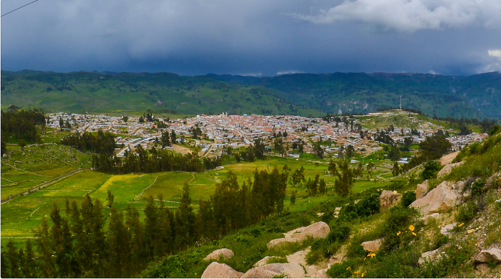
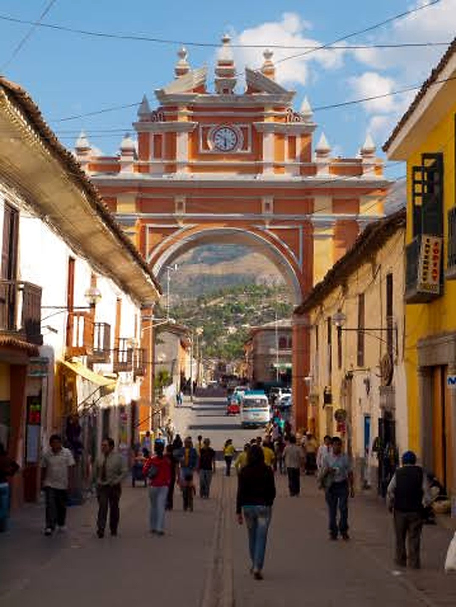

Postales de un viaje
Puquio en
imágenes.
Una ventana visual a sus plazas, iglesias, celebraciones y paisajes andinos.
Miradas de Puquio
Una ciudad para recordar.
La galería reúne fotografías de Puquio y su entorno. Antes de publicar el portal, verifica que cada imagen cuente con autorización o licencia de uso.



